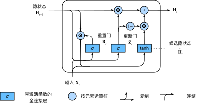
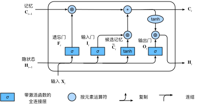
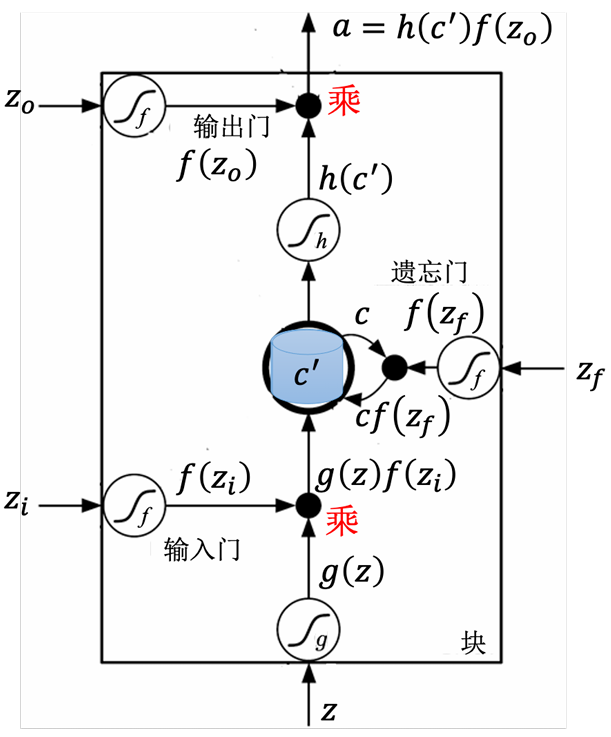
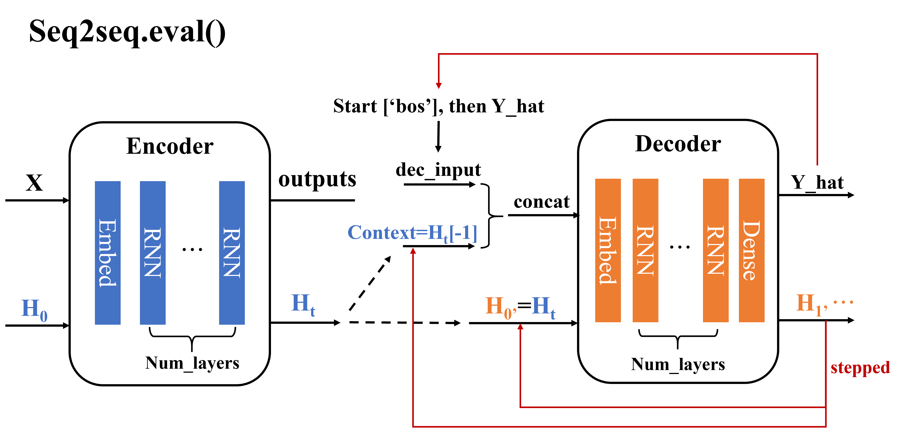
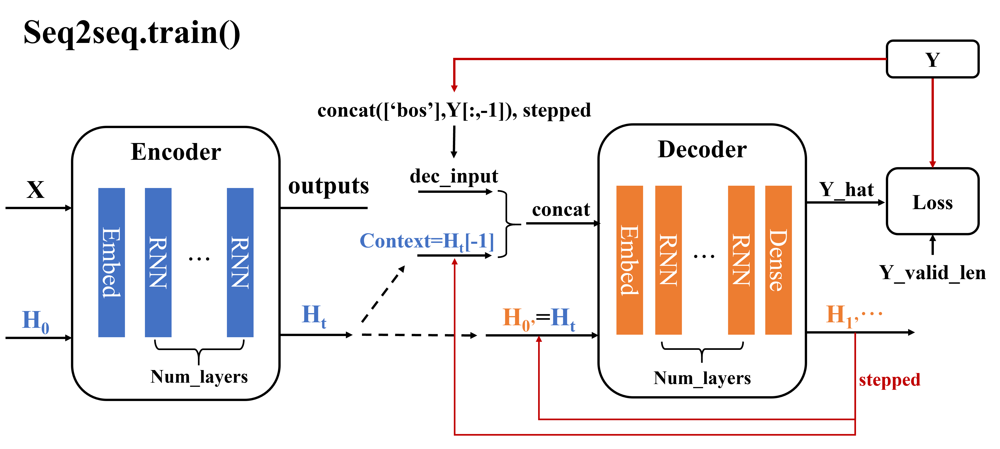
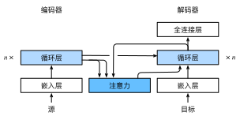
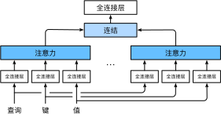
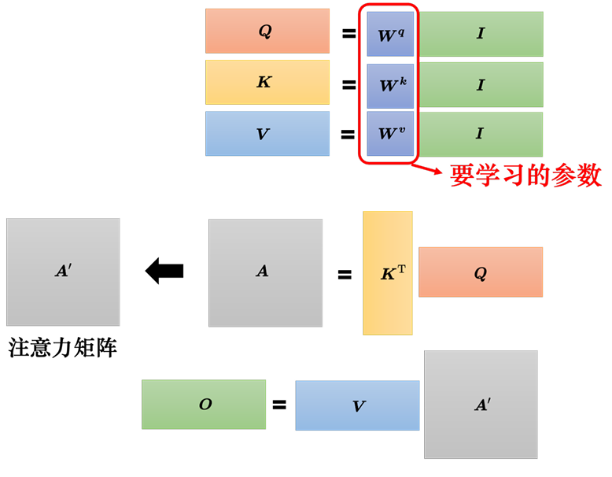

RNN
RNN组织架构的精髓在于：在输入输出之外，引入了隐状态来表达当前输入输出所额外包含的序列信息。RNN的Hidden_size是超参数，这种自由度为隐状态的物理含义披上了一层神秘面纱（当然本来ML就是一个难以解释的迷hh）。给出RNN的基本计算公式。由这个公式可以拓展出，RNN包括下面的所有东西都可以是双向的bi-direction、多层的multi_layer。
Ht=tanh(Xt∗Wxh+Ht−1∗Whh+bh)Ot=O(Ht∗Whq+bq)
GRU和LSTM
每次RNN对输入进来的东西进行处理后，会不由分说/平等/一视同仁地更新隐状态。仿佛对上一隐状态只留存极其短期的记忆，但有时候可能特别在意序列特别早期输入进来的内容，或者此次的输入根本不重要等，希望希望对这个短期记忆能够长一点。因此就叫做长的短期记忆神经网络（Long Short-Term Memory）。GRU和LSTM都是这个作用，GRU虽然提出的晚但是结构更简单计算更快，但是LSTM似乎被用的更加广泛一些。
GRU
简单给出公式和图解，这里得到新的隐状态之后，再用上面RNN的最后一条公式得到输出。在这里，重置门直接把输入和上一隐状态结合得到候选隐状态，因此可以把候选隐状态当作是普通RNN直接处理输入信息的流程。因此重置门肯定依赖的是序列中的短期信息。而更新门把根据当前输入，决定上一隐状态有多少程度被保留下来，有多少程度被候选隐状态更新，因此可以捕获较为长期的信息。
Rt=σ(XtWxr+Ht−1Whr+br)Zt=σ(XtWxz+Ht−1Whz+bz)
H~t=tanh(XtWxh+(Rt⊙Ht−1)Whh+bh)Ht=Zt⊙Ht−1+(1−Zt)⊙H~t.

LSTM
这里李沐和李宏毅作的图都不太完美。可以发现比较特别的地方在于，除了隐状态随时间变化之外，还有一个记忆元随时间变化。似乎很难直接理解lstm的设计思路。这里的逻辑可以理解成：
- 基于Ht−1生成输入门、遗忘门、输出门的值；
- 根据输入生成一个候选记忆元C~t，用输入门和遗忘门分别对候选记忆元和旧记忆元做加权决定新记忆元Ct；
- 用新记忆元Ct和输出门来决定Ht
ItFtOt=σ(XtWxi+Ht−1Whi+bi)=σ(XtWxf+Ht−1Whf+bf)=σ(XtWxo+Ht−1Who+bo)
C~t=tanh(XtWxc+Ht−1Whc+bc)Ct=Ft⊙Ct−1+It⊙C~tHt=Ot⊙tanh(Ct)


Seq2seq
对于一个rnn/gru/lstm来说，假设输入x的形状为(num_steps,input_size)，则输出y的形状为(num_steps,output_size)，也就是序列长度num_steps是不变的。Seq2seq和以往所有网络不同的地方在于输入序列和输出序列都是长度可变的。
Embedding
1
2
3
4
| x = torch.zeros((m,n))
embd = nn.Embedding(vocab_size, embed_size)
y = embd(x)
|
pred & train


束搜索 beam search
这是一个’后处理’的问题。以文本生成为例，考虑在s2s的解码过程中，每次得到y_hat，（似乎不会直接把这个y_hat直接作为下一步的输入），会做softmax之后从词表中找到概率最大对应的字，以这个字对应的独热编码作为下一步的输入。
这么做的本质就已经是一种贪心算法的体现了，如果把softmax的结果视作概率，每次都取最大概率得到的序列，其对应的总概率可能并不是一个全局最大的结果。因此比起把可能的所有序列的穷举出来，不如每次softmax之后选概率比较大的k个字作为下一步的输入，等下一步得到k2个待选序列之后再取k个概率更大的序列再次放入下一步，以此不断循环。
Attention Mechanism
用数学语言描述，假设有一个查询q∈Rq和m个“键－值”对(k1,v1),…,(km,vm)，其中ki∈Rk，vi∈Rv。注意力汇聚函数f就被表示成值的加权和：
f(q,(k1,v1),…,(km,vm))=i=1∑mα(q,ki)vi∈Rv,
其中查询q和键ki的注意力权重（标量）是通过注意力评分函数a 将两个向量映射成标量，再经过softmax运算得到的：
α(q,ki)=softmax(a(q,ki))=∑j=1mexp(a(q,kj))exp(a(q,ki))∈R.
因此，注意力汇聚函数在很大程度上依赖于注意力评分函数a 。
此外，给出各个参数的形状来帮助理解：
queries: (batch, num_steps,len(vocab))
keys: (batch, num_KV, key_size)
values: (batch, num_KV, values_size)
attention: (batch, num_steps, value_size)
加性评分函数
当查询和键是不同长度的矢量时，我们可以使用加性注意力作为评分函数。给定查询q∈Rq和键k∈Rk，加性注意力（additive attention）的评分函数为
a(q,k)=wv⊤tanh(Wqq+Wkk)∈R,
其中可学习的参数是Wq∈Rh×q、Wk∈Rh×k和wv∈Rh。将查询和键连结起来后输入到一个多层感知机（MLP）中，感知机包含一个隐藏层，其隐藏单元数是一个超参数h。通过使用tanh作为激活函数，并且禁用偏置项。
使用点积可以得到计算效率更高的评分函数，但是点积操作要求查询和键具有相同的长度d。假设查询和键的所有元素都是独立的随机变量，并且都满足零均值和单位方差，那么两个向量的点积的均值为0，方差为d。为确保无论向量长度如何，点积的方差在不考虑向量长度的情况下仍然是1，我们将点积除以d，则缩放点积注意力（scaled dot-product attention）评分函数为：
a(q,k)=q⊤k/d.
在实践中，我们通常从小批量的角度来考虑提高效率，例如基于n个查询和m个键－值对计算注意力，其中查询和键的长度为d，值的长度为v。查询Q∈Rn×d、键K∈Rm×d和值V∈Rm×v的缩放点积注意力是：
softmax(dQK⊤)V∈Rn×v.
Bahdanau注意力模型
下面描述的Bahdanau注意力模型中，上下文变量c在任何解码时间步t′都会被ct′替换。假设输入序列中有T个词元，解码时间步t′的上下文变量是注意力集中的输出：
ct′=t=1∑Tα(st′−1,ht)ht,
其中，时间步t′−1时的解码器隐状态st′−1是查询，编码器隐状态ht既是键，也是值。

多头注意力

自注意力

参考文献
[]